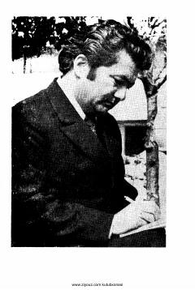

YFBashirjon Zainishevning qiziqarli va hajviy hayot yo'liga bag'ishlangan qo'sh qissa.
Ushbu asar taniqli yozuvchi Ne'mat Aminov qalamiga mansub bo'lib, unda Elvizakfe'lu Suvarakmijoz Bashirjon Zainishevning hayoti va sarguzashtlari satirik yo'nalishda tasvirlangan. Kitob o'zbek adabiyotining yorqin namunalaridan biri bo'lib, muallifning o'tkir hajviy uslubini namoyon etadi.